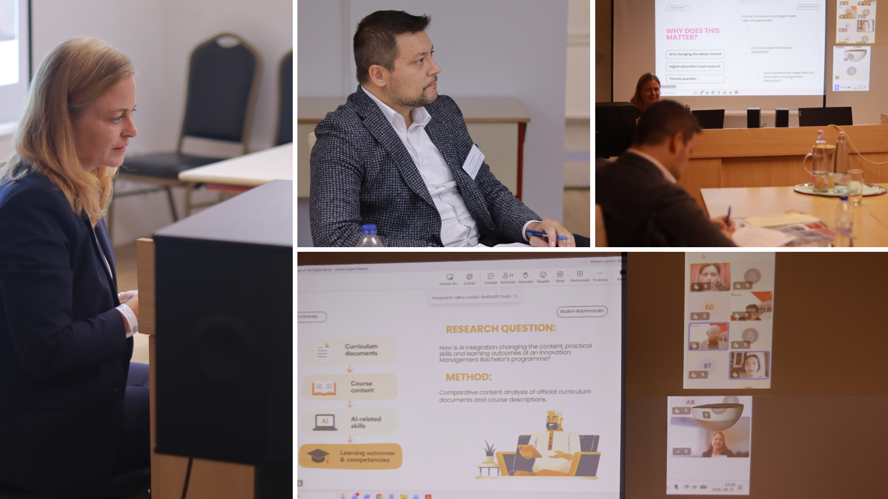
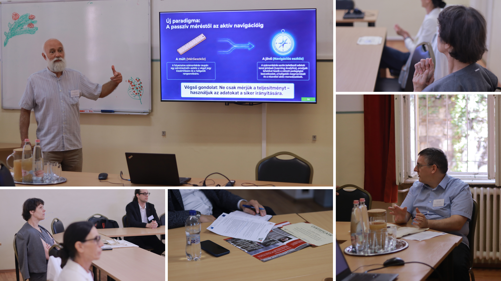

29 September 2026
New Tools, New Approaches to Learning
How can new technologies be integrated into education in ways that genuinely support learning? The second part of our Train-the-Trainer event report brings together the English-language online session and the Hungarian-language face-to-face session, where researchers and educators explored artificial intelligence, learning analytics, immersive technologies, cybersecurity, public health education and new approaches to student engagement.
An International Perspective on Technology and Education
The English online session was chaired by Prof. Dr. Goh Khang Wen of INTI International University and Dr. habil. Petra Benedek of Wekerle International University. At the beginning of the session, Dr. Goh welcomed the participants and gave a short introductory address, setting the tone for the afternoon and emphasizing the importance of international academic exchange.
Dr. Mayibongwe Tafara Mudzengi of INTI International University presented “Turning Training Investment Into Impact: The Motivation Multiplier.” His presentation focused on how motivation influences the transfer and effectiveness of professional training in private higher education in Malaysia.
Rodion Rakhmatullin of Saint Petersburg Electrotechnical University “LETI” presented “Integrating Artificial Intelligence into Innovation Management Education.” He discussed how AI tools and competencies are increasingly being incorporated into innovation-management curricula and professional training.
Elizaveta Glazova of the Higher School of Economics spoke about “AI Ethics in Education: Main Challenges of Teaching, Learning and Assessment with Artificial Intelligence.” Her presentation highlighted key ethical issues connected with AI use in education, including privacy, fairness, transparency, academic integrity and human responsibility.
Rozália Szatmáry of Óbuda University presented “Generative AI as Individualized Learning Support: Opportunities, Limits, and Pedagogical Effectiveness.” She examined the potential of generative AI to provide personalized support to learners, while also stressing that easy access to answers does not necessarily mean that meaningful learning has taken place.

Anna Bychkova of the Moscow Technological Institute presented “Cybersecurity Competencies for AI-Enabled Medical Technologies.” Her contribution focused on the knowledge and skills that future MedTech professionals need in areas such as cybersecurity, data protection, trustworthy AI and the safe use of connected medical technologies.
Victor Kwabla Senaya of Óbuda University presented “Virtual PK-PD Digital Twins for Oncology Education.” He introduced a simulation-based educational framework designed to help learners develop technical, clinical and regulatory competencies in oncology and model-informed healthcare.
The programme also included two contributions from Sapientia Hungarian University of Transylvania. Dr. Ágnes Sántha presented “Basic Descriptive Statistical Analysis for Public Health Education,” addressing the role of basic statistical skills in public-health-related education. She also delivered Dr. Eszter Metz’s presentation, “Teaching Data and Network Visualization in Public Health Education: A Ten-Module Course for Building Systems Thinking,” on Dr. Metz’s behalf, introducing an educational approach centred on visualization and systems thinking.
Taken together, the presentations covered a broad range of current issues in higher education, with particular attention to artificial intelligence, digital transformation, healthcare, public-health education, training effectiveness and professional competencies. Despite their different disciplinary backgrounds, the contributions shared a common interest in how new technologies can be integrated into education in a meaningful, responsible and pedagogically sound way.
The presentations were followed by opportunities for discussion. Although the number of questions was relatively limited, several questions and comments were raised, leading to short exchanges between presenters and participants and adding an interactive element to the session.
Exploring Learning from the Student Perspective
The Hungarian-language face-to-face session was chaired by Dr. Péter Szikora of Óbuda University. Although the audience consisted mainly of the presenters themselves, the session developed into a particularly engaged and lively exchange. The presentations triggered substantial discussion, and the programme ultimately ran more than 30 minutes beyond the allocated time.
A notable feature of the session was that all presenters are members of the TIG research group (Társadalom, Informatika, Gazdaság) of the Keleti Károly Faculty of Business and Management at Óbuda University, giving the session a strong shared research background while still covering a wide range of educational and technological topics.

Dr. András Keszthelyi of Óbuda University presented “Korai teljesítményjelzések egy informatikai kurzuson: kurzusszintű eredmények a veszélyeztetett hallgatók azonosítására.” His presentation showed how early-course performance data and activity indicators can help identify students who may later be at risk of disengagement or unsuccessful course completion, making routine learning analytics useful for timely intervention and student support.
Dr. Péter Szikora of Óbuda University presented “A kattintásszámokon túl: az elméleti témakörök lefedettsége mint tanulási stratégia indikátora az informatikai oktatásban.” He argued that looking at how broadly students actually engage with theoretical course topics can provide more meaningful insight into learning strategies than simple click counts or access frequency.
Ildikó Kertai-Kiss of Károli Gáspár University presented “A reflektív kompetenciák a személyes tanulásban.” Her contribution brought a more learner-centred perspective to the session, focusing on the role of reflection and self-awareness in personal learning processes.
Dániel Frankl of Óbuda University presented “Interaktív tanulás immerzív technológiák segítségével.” His presentation explored the use of immersive technologies such as VR and AR in education, with particular attention to experiential learning and situations where realistic practice would otherwise be dangerous, costly or difficult to organize.
Dr. Ádám Béla Horváth of Óbuda University presented “Miért választják és hogyan hasznosítják a tanulók a MOOC-kurzusokat? A mozgatórugók, akadályok, motivációk és realizált előnyök szisztematikus áttekintése.” His contribution examined why learners choose MOOCs, what helps or hinders continued participation, and what kinds of educational, professional and personal benefits they actually gain from these courses.
Pál Fehér-Polgár of Óbuda University presented “E-kereskedelmi technológiák és innovációs megoldások; AI-alapú személyre szabás és interaktív e-learning módszertanok használata a felsőoktatásban.” He discussed how emerging e-commerce technologies, AI-based personalization, AR/VR and interactive digital solutions can be adapted for higher-education and blended-learning environments.
The session was characterized by unusually active discussion. Because the presenters shared related research interests and methodological concerns, several contributions naturally connected with one another, especially around learning analytics, student engagement, digital learning environments, immersive technologies, AI-supported personalization and changing teaching practices. Rather than ending with brief questions after each presentation, the exchanges often developed into broader conversations about how these tools and methods can be used in real educational settings.
Together, the two sessions demonstrated the breadth of current research and practice around digitally supported education. From AI ethics and cybersecurity to learning analytics, public health, immersive technologies and learner motivation, the discussions showed how technological change is opening up new possibilities while simultaneously creating new pedagogical questions.
To be continued…
Our Train-the-Trainer event report continues in the third and final part of the series, where the focus shifts to broader discussions on responsible AI use, student motivation, assessment, lifelong learning and the future of digital education.
The views and opinions expressed are those of the author(s) and do not necessarily reflect those of the European Union or the Tempus Public Foundation. Neither the European Union nor the granting authority can be held responsible for them.